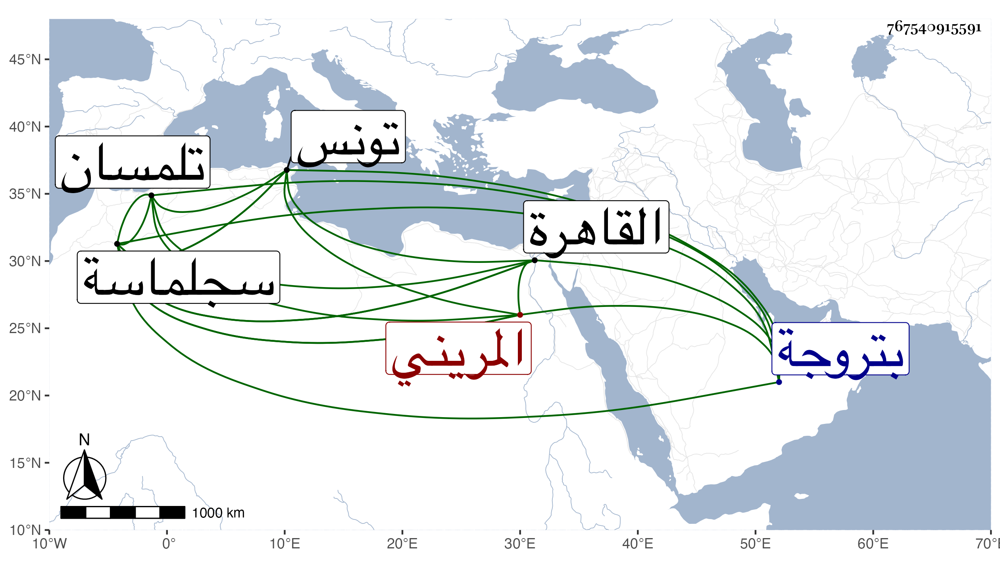

0902Sakhawi.DawLamic.ITO20230111-ara1.EIS1600.767540915591
Biography ID: 767540915591
721
محمد بن عبد الحكم ويقال له حلي بن أبي علي عمر بن أبي سعيد عثمان بن عبد الحق المريني . كان أبوه صاحب سجلماسة ومات بتروجة بعد أن حج في سنة سبع وستين فنشأ ولده هذا تحت كنف صاحب تلمسان ثم أن عرب المعقل نصبوه في سنة تسع وثمانين أميرا على سجلماسة وقام عاملها علي بن إبراهيم بن عبوس بأمره ثم تنافرا فلحق صاحب الترجمة بتونس فلما استقر أبو فارس في المملكة توجه إلى الحج فدخل القاهرة فحج ورجع فصار يتردد إلى أبي زيد بن خلدون وساءت حاله وافتقر حتى مات في سنة عشر ، ذكره شيخنا في أنبائه .
